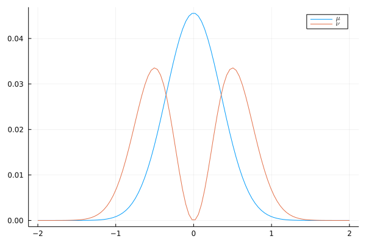
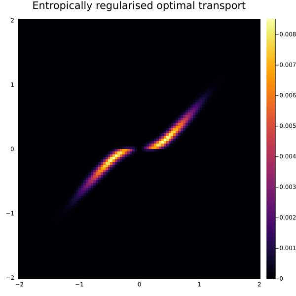
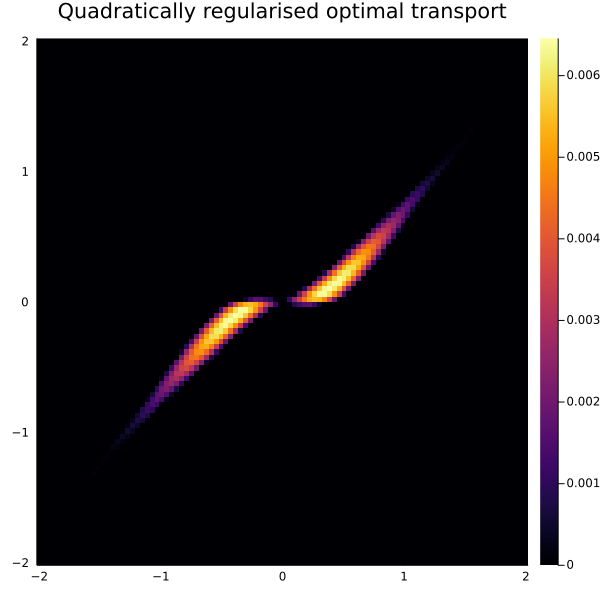
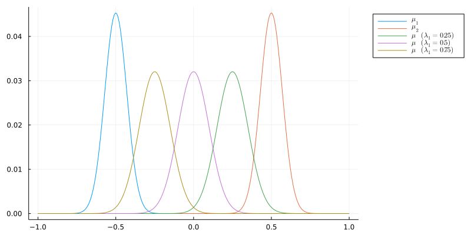

Basics

You are seeing the HTML output generated by Documenter.jl and Literate.jl from the Julia source file. The corresponding notebook can be viewed in nbviewer.
Packages
We load the following packages into our environment:
using OptimalTransport
using Distances
using Plots
using PythonOT: PythonOT
using Tulip
using LinearAlgebra
using Random
Random.seed!(1234)
const POT = PythonOTPythonOTProblem setup
First, let us initialise two random probability measures $\mu$ (source measure) and $\nu$ (target measure) in 1D:
M = 200
μ = fill(1 / M, M)
μsupport = rand(M)
N = 250
ν = fill(1 / N, N)
νsupport = rand(N);Now we compute the quadratic cost matrix $C_{ij} = \| x_i - x_j \|_2^2$:
C = pairwise(SqEuclidean(), μsupport', νsupport'; dims=2);Exact optimal transport
The earth mover's distance is defined as the optimal value of the Monge-Kantorovich problem
\[\inf_{\gamma \in \Pi(\mu, \nu)} \langle \gamma, C \rangle = \inf_{\gamma \in \Pi(\mu, \nu)} \sum_{i, j} \gamma_{ij} C_{ij},\]
where $\Pi(\mu, \nu)$ denotes the set of couplings of $\mu$ and $\nu$, i.e., the set of joint distributions whose marginals are $\mu$ and $\nu$. If $C$ is the quadratic cost matrix, the earth mover's distance is known as the square of the 2-Wasserstein distance.
The function emd returns the optimal transport plan $\gamma$
γ = emd(μ, ν, C, Tulip.Optimizer());whilst using emd2 returns the optimal transport cost:
emd2(μ, ν, C, Tulip.Optimizer())0.0006423893452596193Entropically regularised optimal transport
We may add an entropy term to the Monge-Kantorovich problem to obtain the entropically regularised optimal transport problem
\[\inf_{\gamma \in \Pi(\mu, \nu)} \langle \gamma, C \rangle + \varepsilon \Omega(\gamma),\]
where $\Omega(\gamma) = \sum_{i, j} \gamma_{ij} \log(\gamma_{ij})$ is the negative entropy of the coupling $\gamma$ and $\varepsilon$ controls the strength of the regularisation.
This problem is strictly convex and admits a very efficient iterative scaling scheme for its solution known as the Sinkhorn algorithm.
We compute the optimal entropically regularised transport plan:
ε = 0.01
γ = sinkhorn(μ, ν, C, ε);We can check that one obtains the same result with the Python Optimal Transport (POT) package:
γpot = POT.sinkhorn(μ, ν, C, ε)
norm(γ - γpot, Inf)5.781996301017223e-12We can compute the optimal cost (a scalar) of the entropically regularized optimal transport problem with sinkhorn2:
sinkhorn2(μ, ν, C, ε)0.005117874184265585Quadratically regularised optimal transport
Instead of the common entropically regularised optimal transport problem, we can solve the quadratically regularised optimal transport problem
\[\inf_{\gamma \in \Pi(\mu, \nu)} \langle \gamma, C \rangle + \varepsilon \frac{\| \gamma \|_F^2}{2}.\]
One property of the quadratically regularised optimal transport problem is that the resulting transport plan $\gamma$ is sparse. We take advantage of this and represent it as a sparse matrix.
quadreg(μ, ν, C, ε; maxiter=100);Stabilized Sinkhorn algorithm
When $\varepsilon$ is very small, we can use a log-stabilised version of the Sinkhorn algorithm.
ε = 0.005
γ = sinkhorn_stabilized(μ, ν, C, ε; maxiter=5_000);Again we can check that the same result is obtained with the POT package:
γ_pot = POT.sinkhorn(μ, ν, C, ε; method="sinkhorn_stabilized", numItermax=5_000)
norm(γ - γ_pot, Inf)1.0194207782608655e-11Stabilized Sinkhorn algorithm with $\varepsilon$-scaling
In addition to log-stabilisation, we can use $\varepsilon$-scaling:
γ = sinkhorn_stabilized_epsscaling(μ, ν, C, ε; maxiter=5_000);The POT package yields the same result:
γpot = POT.sinkhorn(μ, ν, C, ε; method="sinkhorn_epsilon_scaling", numItermax=5000)
norm(γ - γpot, Inf)2.179203825313121e-11Unbalanced optimal transport
Unbalanced optimal transport deals with general positive measures which do not necessarily have the same total mass. For unbalanced source and target marginals $\mu$ and $\nu$ and a cost matrix $C$, entropically regularised unbalanced optimal transport solves
\[\inf_{\gamma \geq 0} \langle \gamma, C \rangle + \varepsilon \Omega(\gamma) + \lambda_1 \mathrm{KL}(\gamma 1 | \mu) + \lambda_2 \mathrm{KL}(\gamma^{\mathsf{T}} 1 | \nu),\]
where $\varepsilon$ controls the strength of the entropic regularisation, and $\lambda_1$ and $\lambda_2$ control how strongly we enforce the marginal constraints.
We construct two random measures, now with different total masses:
M = 100
μ = fill(1 / M, M)
μsupport = rand(M)
N = 200
ν = fill(1 / M, N)
νsupport = rand(N);We compute the quadratic cost matrix:
C = pairwise(SqEuclidean(), μsupport', νsupport'; dims=2);Now we solve the corresponding unbalanced, entropy-regularised transport problem with $\varepsilon = 0.01$ and $\lambda_1 = \lambda_2 = 1$:
ε = 0.01
λ = 1
γ = sinkhorn_unbalanced(μ, ν, C, λ, λ, ε);We check that the result agrees with POT:
γpot = POT.sinkhorn_unbalanced(μ, ν, C, ε, λ)
norm(γ - γpot, Inf)1.3149128927619075e-9Plots
Entropically regularised transport
Let us construct source and target measures again:
μsupport = νsupport = range(-2, 2; length=100)
C = pairwise(SqEuclidean(), μsupport', νsupport'; dims=2)
μ = normalize!(exp.(-μsupport .^ 2 ./ 0.5^2), 1)
ν = normalize!(νsupport .^ 2 .* exp.(-νsupport .^ 2 ./ 0.5^2), 1)
plot(μsupport, μ; label=raw"$\mu$", size=(600, 400))
plot!(νsupport, ν; label=raw"$\nu$")
Now we compute the entropically regularised transport plan:
γ = sinkhorn(μ, ν, C, 0.01)
heatmap(
μsupport,
νsupport,
γ;
title="Entropically regularised optimal transport",
size=(600, 600),
)
Quadratically regularised transport
Notice how the "edges" of the transport plan are sharper if we use quadratic regularisation instead of entropic regularisation:
γquad = quadreg(μ, ν, C, 5; maxiter=100);
heatmap(
μsupport,
νsupport,
γquad;
title="Quadratically regularised optimal transport",
size=(600, 600),
)
Sinkhorn barycenters
For a collection of discrete probability measures $\{\mu_i\}_{i=1}^N \subset \mathcal{P}$, cost matrices $\{C_i\}_{i=1}^N$, and positive weights $\{\lambda_i\}_{i=1}^N$ summing to $1$, the entropically regularised barycenter in $\mathcal{P}$ is the discrete probability measure $\mu$ that solves
\[\inf_{\mu \in \mathcal{P}} \sum_{i = 1}^N \lambda_i \operatorname{OT}_{\varepsilon}(\mu, \mu_i)\]
where $\operatorname{OT}_\varepsilon(\mu, \mu_i)$ denotes the entropically regularised optimal transport cost with marginals $\mu$ and $\mu_i$, cost matrix $C$, and entropic regularisation parameter $\varepsilon$.
We set up two measures and compute the weighted barycenters. We choose weights $\lambda_1 \in \{0.25, 0.5, 0.75\}$.
support = range(-1, 1; length=250)
mu1 = normalize!(exp.(-(support .+ 0.5) .^ 2 ./ 0.1^2), 1)
mu2 = normalize!(exp.(-(support .- 0.5) .^ 2 ./ 0.1^2), 1)
plt = plot(; size=(800, 400), legend=:outertopright)
plot!(plt, support, mu1; label=raw"$\mu_1$")
plot!(plt, support, mu2; label=raw"$\mu_2$")
mu = hcat(mu1, mu2)
C = pairwise(SqEuclidean(), support'; dims=2)
for λ1 in (0.25, 0.5, 0.75)
λ2 = 1 - λ1
a = sinkhorn_barycenter(mu, C, 0.01, [λ1, λ2], SinkhornGibbs())
plot!(plt, support, a; label="\$\\mu \\quad (\\lambda_1 = $λ1)\$")
end
plt
This page was generated using Literate.jl.